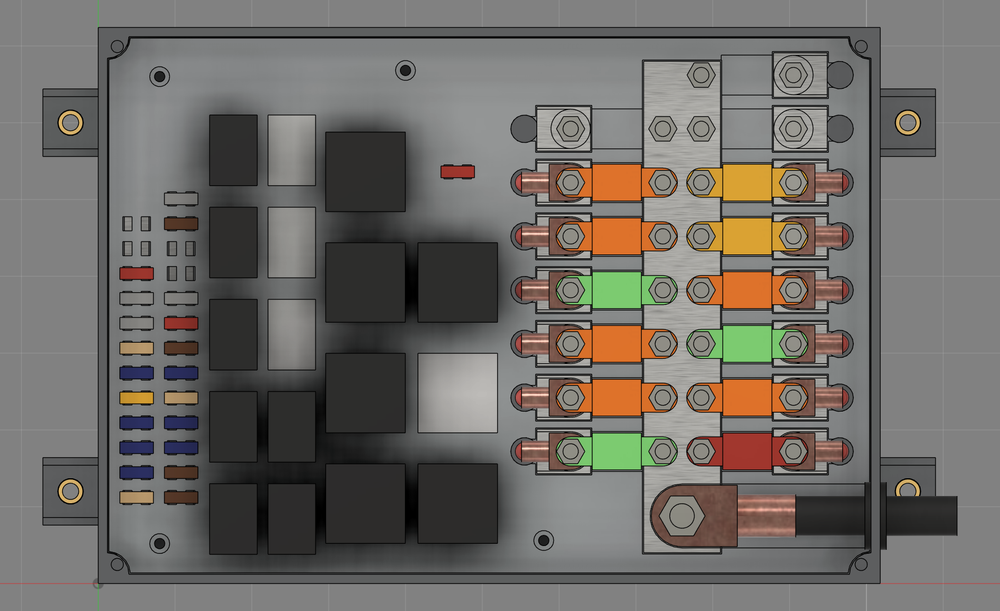

ST185 glove-box fuse + relay box - CAD rev 2 (printed)
Claude Code, 2026-10-14. One custom box (plan rev 2). Rev 2: tray, deck and lid are PA12 printed by powder-bed fusion (Dan's HP printer, R73); only the current-carrying parts are metal. Dan's answers: L1 AMI studs (R71), L4 smallest sensible footprint (R72), L5 custom box (R70). Fusion: ST185_fusebox_rev2 (Default Project; rev 1 aluminium version kept there as history). Model files (STEP / STL / f3d) are local, untracked, in cad/fusebox/ of the main checkout. Build: cad/fusebox/src/.


Printed parts (PA12, powder-bed)
| Part | File (STL + STEP) | Size mm (L x D x H) | Volume / mass | What it is |
|---|---|---|---|---|
| Tray | Tray_PA12_printed.stlTray_PA12_printed.step | 290.5 x 181.0 x 79.5 | 394.5 cm³ / ~398 g | Open-top tub, 3 mm walls and floor, 4 gusseted mounting ears (brass limiter in each), 4 deck posts and 4 corner bosses with M3 heat-set inserts. Forward wire-exit slot, 1/0 grommet hole in the outboard end. |
| Deck | Deck_PA12_printed.stlDeck_PA12_printed.step | 247.6 x 174.1 x 26.0 | 516.0 cm³ / ~521 g | 8 mm top plate on a 3 mm skirt; terminal-cavity towers under every relay / fuse group; 4 ribs under the power zone run front-to-back (with the wires). Open underneath: no closed cavity, no trapped powder. |
| Lid | Lid_PA12_printed.stlLid_PA12_printed.step | 254.5 x 181.0 x 5.5 | 131.3 cm³ / ~133 g | 2.5 mm plate with a 2 x 3 mm rib grid on top (stops a flat PA12 plate warping); 4 M3 screws into the tray inserts. |
Mass at the HP PA12 part density 1.01 g/cm³. Metal parts are exported as STEP only (Bar_Power_Al6061_25x6, Pad_Out_Al6061, Strip_Logic_Al6061_8x4) plus the whole assembly (ST185_fusebox_rev2_assembly.step).
Designed for powder-bed printing
- Walls: 3 mm tray walls and floor (loaded), 2.5 mm ribs and gussets, 8 mm deck plate (4 mm under the metal pockets), 2.5 mm lid plus ribs. Nothing under 2.0 mm.
- No solid blocks: the deck is a ribbed shell with towers only where the terminal cavities are; the lid is ribbed instead of thick.
- No trapped powder: every printed part is open on one side (tray top, deck underside, lid is a plate); no closed cavity, so no escape holes are needed.
- Fits: 0.45 mm per side between printed parts (deck in tray, around posts and bosses); 0.4 mm per side for metal in a printed pocket.
- Threads: none printed. M3 brass heat-set inserts in the tray (lid corners, deck posts); all power studs thread into the aluminium bar and pads.
- Torque goes into metal: the AMI nuts (4 Nm) bear on the fuse ear, lug and Al pad / bar; the stud is threaded into the Al. The bar (5 screws) and every pad (1 screw) are held down from below by M4 screws through brass compression limiters, so the clamp is screw -> brass -> Al and never crushes nylon. The mounting ears have brass limiters too.
- Heat: PA12 (HP 3D HR PA 12) deflects at 95 °C under 1.82 MPa and 175 °C under 0.45 MPa. The 25 x 6 Al bar (150 mm²) carries more than the 1/0 copper (53 mm²) that feeds it, so the bar runs cooler than the feed cable. Keep it below 95 °C: check with a thermocouple on the bench at full load before the box goes in.
- Live-part spacing (measured in Fusion): neighbouring AMI outputs 3.0 mm apart with a printed rib between, input bar to any output 17.2 mm, 1/0 lug to the nearest output 7.3 mm, output lugs 5.5 mm apart. At 12-14 V these gaps are about keeping debris and a dropped tool from bridging, not about voltage.
How it is laid out
- Power zone (outboard): one 25 x 6 aluminium bar along the depth, M8 1/0 input at its forward end, AMI fuses on both sides. Inboard row feeds the F7 relays (short internal leads); outboard row is the direct outputs. Each output stud sits on an aluminium pad with a ring-lug inset machined in (bus bar design B style).
- F7 relays (middle): 2 x 4 grid; the 8th spot is the ACPS mini fuse, beside the heater relay (L3B).
- Logic zone (inboard): Bus 1 and Bus 2 mini-fuse columns (8.1 mm pitch) on 8 x 4 aluminium strips that slide into the deck from below, then 10 micro relay positions.
- Wiring: every wire drops through the deck into the 22 mm cable bay and leaves through one grommet strip in the forward (firewall) wall.
Dimensions
| Item | mm | Source |
|---|---|---|
| Box, closed (L x D x H) | 254.5 x 181.0 x 85.0 | model |
| Cable bay / deck / parts above deck | 22 / 26 / to 79.5 | plan rev 2 allowance; terminal depths to set from TE drawings |
| AMI fuse | 41 long, 30 stud centres, body 16 x 12 x 6, hole 5.5, 4 Nm | Bussmann AMI sheet |
| AMI pitch | 17.5 (pad 14.5 + 3.0 gap) | Klauke 2R5 b 12 -> pocket 12.8 |
| F7 relay | 25.9 sq x 24.9, pitch 30 x 36 | TE F7 data sheet 2023-03 |
| Micro relay | 15.5 x 23 x 24.1, pitch 19 x 30 | TE Micro Relay A 1308028 |
| Mini fuse | 10.92 x 3.81, pitch 8.1 | Bussmann ATM / Eaton 15400 |
| Ears | 4 x 18 x 22 x 6, 2 gussets each, hole 8.4 for the M5 limiter | model |
Interference check: none between parts.
Parts list (OWN / BUY)
Order: on-hand TE list, then TE, then approved suppliers, then others with a reason (R38). "OWN" counts are qty_ordered from te-on-hand-bom.csv - confirm on the shelf. TBD = not checked against a maker sheet yet.
| Part | Part number | Qty | Note |
|---|---|---|---|
| Relay F7 Maxi ISO, 680 ohm | 1-1414147-0 (V23134-J0052-X429) | OWN 3 + BUY 1 | heater, k_efi, k_fan (own); k_str (buy). te-on-hand-bom.csv: qty_ordered 3 - confirm on the shelf. |
| Relay F7 Maxi ISO, bracket, 560 ohm | 1-1393304-0 (V23134-J1052-X281) | OWN 2 | k_fan2, power. Bracket not used in the box (cut off or fold flat). |
| Micro relay A, NO, diode | 5-1393292-8 | OWN 2 | HEAD LH / RH |
| Micro relay A, NO | 4-1904124-3 | OWN 1 | horn |
| Micro relay A, NO, resistor | 4-1904124-2 | OWN 1 | k_etb |
| Micro relay A, CO, diode | 6-1419137-4 | OWN 2 + BUY 1 | k_acc, k_eps_en (own); k_rev (buy) |
| HCR150 relay | 1416010-1 | OWN 1 | k_eps, mounted beside the box (not in it) |
| AMI bolt-in fuse | Bussmann AMI-30 / -40 / -50 / -60 | BUY 6 / 3 / 1 / 2 | Other maker (R38 step 4): TE makes no bolt-in fuse. Part numbers from the Bussmann AMI sheet / Mouser list. |
| Mini blade fuse (ATM) | Bussmann ATM-2 / 5 / 7.5 / 10 / 15 / 20 | BUY 4 / 3 / 4 / 3 / 7 / 1 | ratings 2A x4, 5A x3, 7.5A x4, 10A x3, 15A x7, 20A x1. Other maker: TE makes no blade fuse. |
| FASTON 9.5 receptacle, 12-10 AWG | 280756-4 | BUY 12 | F7 30 / 87 (6 relays). TE. |
| FASTON 6.35 receptacle, 18-14 AWG | 42281-1 | OWN 20 + BUY ~6 | F7 85 / 86 (12) + micro 6.3 load blades (~14). qty_ordered 20. |
| 4.8 mm receptacle (micro coil blades) | TBD | - | TBD: TE 4.8 x 0.8 receptacle for 18-20 AWG - pick in detail work. |
| 2.8 mm receptacle (mini fuse) | TBD | - | TBD: 880398-2 is a candidate (plan S12), fit on an ATM blade not confirmed. |
| Tubular lug 10 mm2 M5 (AMI outputs, 8-10 AWG) | Klauke 2R5 | BUY 11 | Same lug family as the bus bar (Klauke R); TE SOLISTRAND alternative not checked yet. |
| Tubular lug 16 mm2 M5 (J/B1 HOT, 6 AWG) | Klauke 3R5 | BUY 1 | Hole 5.5 confirmed; tongue width NOT confirmed - pocket drawn for 12 mm. |
| Tubular lug 50 mm2 M8 (1/0 input) | Klauke 6R8 | BUY 1 | b 20, l 47, hole 8.4 (RS 398-3015 listing). |
| M5 A2 stud + Keps nut | TBD (ISO 4026 set screw M5x12 + DIN 6923 nut) | BUY 30 + 30 | 2 per AMI position, threaded into the Al bar / pads; 4 Nm max (AMI sheet). |
| M8 A2 stud + nut + washer | TBD (ISO 4026 M8x20 + ISO 4032 + ISO 7089) | BUY 1 | 1/0 input, threaded into the Al bar |
| Hold-down screw M4x10 A2 | ISO 7380 | BUY 20 | From below, into tapped Al bar (5) and pads (15). |
| Brass compression limiter, M4 | TBD (OD 7, ID 4.3, L 4) | BUY 20 | Under every hold-down: the clamp goes screw -> brass -> Al, never into bare nylon. |
| Brass compression limiter, M5 | TBD (OD 8, ID 5.3, L 6) | BUY 4 | One per mounting ear. |
| Brass heat-set insert, M3 | TBD (hole 4.0 x 6 deep as drawn - set to the insert maker) | BUY 8 | 4 lid corners + 4 deck posts. No printed threads. |
| Lid / deck screw | ISO 7380 M3x8 A2 (lid), M3x10 (deck) | BUY 4 + 4 | |
| Power bar, output pads, logic strips | 6061-T6: 25 x 6 bar, 15 pads, 2 strips 8 x 4 | make | Ring-lug insets machined in the Al pads (bus bar style). The only metal besides studs, lugs and hardware. |
| Tray, deck, lid | PA12, powder-bed (MJF / SLS) | See "Printed parts" above. |
Open choices for Dan
- One box or two? The task card says "the 2 custom boxes"; plan rev 2 (your 10-13 answer, fewer boxes) is ONE box. Modeled as one. Splitting it at the F7 column gives an about 182 mm power box and an about 78 mm logic box, same depth - and two smaller prints.
- Power bar metal: aluminium 6061 here (matches the bus bar). Plan rev 2 said copper C110. Copper carries more current for its size; aluminium is lighter and the same metal as the bus bar.
- PA12 or a glass-filled grade? Plain PA12 assumed. HP's PA12 GB (glass beads) is stiffer but more brittle - say if your shop prefers it near the bar.
Not done yet (detail work, after your OK)
- Terminal cavity shapes, TPA comb and front stops from the TE terminal drawings (cavities are placeholders at the right pin pattern).
- Exact heat-set insert and compression-limiter part numbers (hole sizes drawn as placeholders); lid seal; molded labels; internal leads (relay-feed AMI to F7 pin 30, Bus 1 / Bus 2 links).
- Section renders (that Fusion step ran out of memory in rev 1 and stays off), drawings, and the CabinPower redraw (R70).